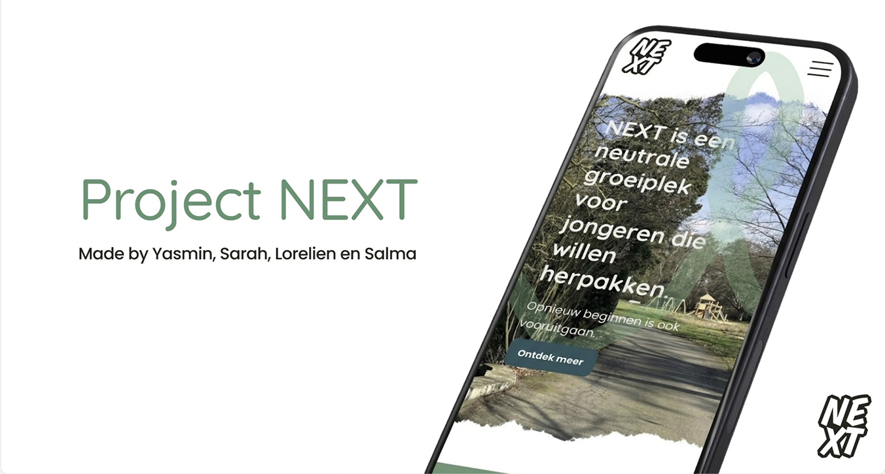

Lumière cinema
Een interactieve cinema-app met focus op UX laws, dark mode en variabelen.

Hallo! Ik ben Lorelien, derdejaarsstudent Digital Experience Design aan Thomas More in Mechelen.
Mijn hart ligt bij UX/UI-design: het vertalen van gebruikersnoden naar logische wireframes, toegankelijke interfaces en interactieve prototypes in Figma.
Vanaf februari 2027 zoek ik een boeiende stageplek in regio Mechelen of Leuven waar ik een designteam kan versterken en mijn skills verder kan aanscherpen.
Lees meer

Een interactieve cinema-app met focus op UX laws, dark mode en variabelen.

Een overzichtelijk website-redesign en WordPress-concept voor een Mechelen jazzclub.

Een toegankelijke mobiele website ontworpen volgens de WCAG-richtlijnen.

Een creatieve verzameling van zelfgemaakte illustraties, iconen en animaties.
